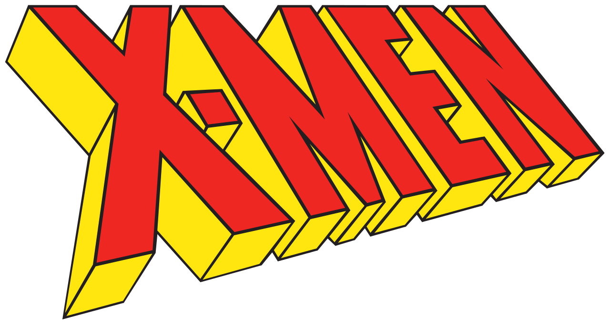

X-MEN
The X-Men are a fictional team of superheroes appearing in American comic books published by Marvel Comics. Created by artist/co-plotter Jack Kirby and writer/editor Stan Lee, the characters first appeared in The X-Men #1 (September 1963) and formed one of the most recognizable and successful franchises of Marvel Comics, appearing in numerous books, television shows, films, and video games. In the Marvel Universe, mutants are humans who are born with natural superhuman abilities, and most normal humans fear and hate them.
The X-Men are a paramilitary group of mutants that fights for peace and equality between normal humans and mutants. They are led by Charles Xavier, also known as Professor X, a powerful telepath. Professor X runs a school for mutant children out of his mansion in Westchester, New York, which secretly is also the headquarters of the X-Men. The X-Men's archenemy is Magneto, a mutant with magnetic abilities who leads a mutant supremacist group known as the Brotherhood of Mutants.
The X-Men have been also adapted to a number of television shows, films, and video games.
